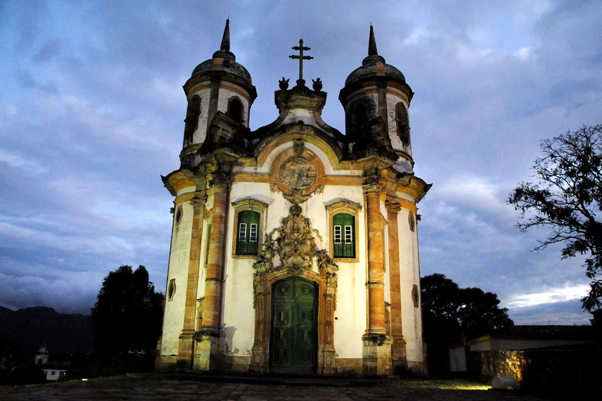
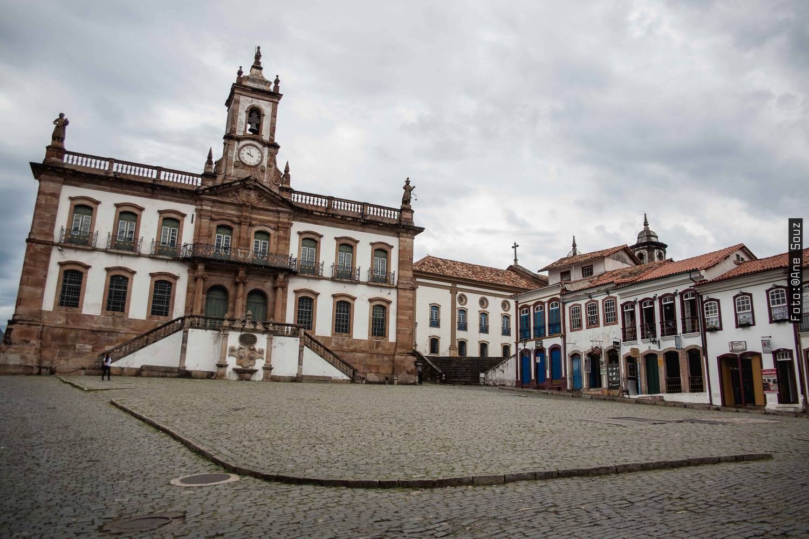
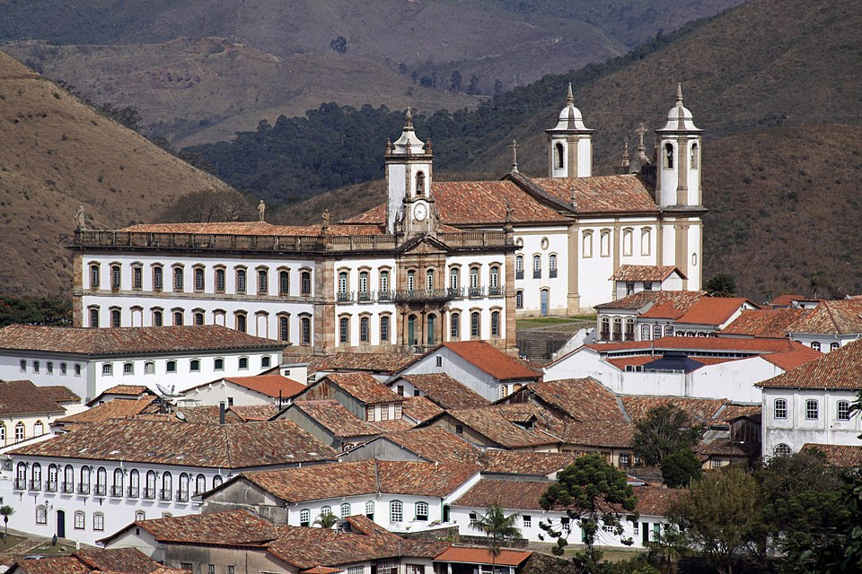
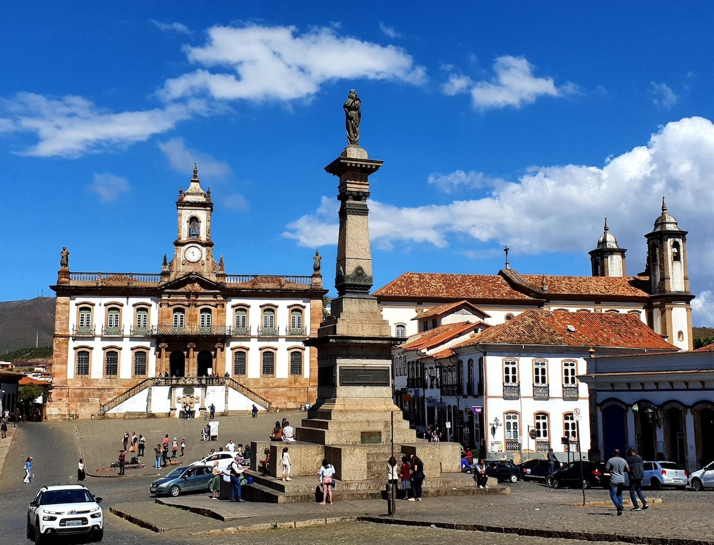
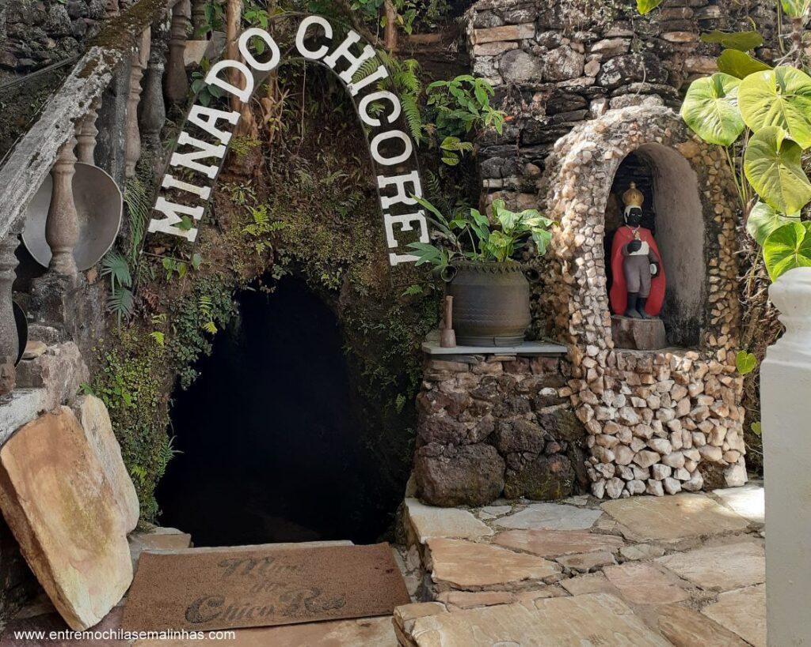
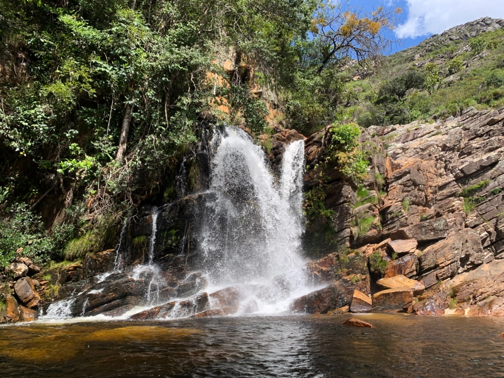
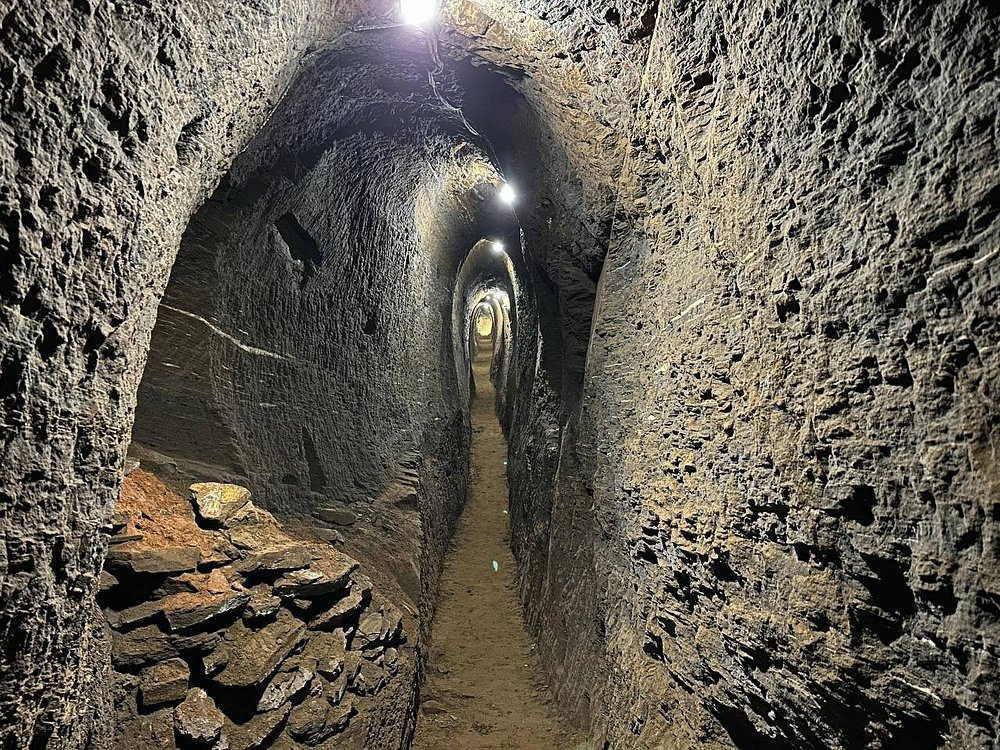

Ouro Preto 
Conheça mais sobre a cidade de Ouro Preto, uma cidade que parece um museu a céu aberto e rica em arte e história
Pontos Turisticos
Igreja São Franscisco de Assis
Igreja de São Francisco de Assis em Ouro Preto- Minas Gerais, Foto tirada por Leandro Neumann Ciuffo
A Igreja de São Francisco de Assis é um dos mais belos exemplos da arquitetura barroca brasileira. Inaugurada em 1771, foi projetada por Antônio Francisco Lisboa, o famoso Aleijadinho, e decorada por Manuel da Costa Ataíde, conhecido como Mestre Ataíde. Localizada próxima à Praça Tiradentes, no centro histórico de Ouro Preto, a igreja integra o conjunto de bens reconhecidos como Patrimônio Mundial da Humanidade pela UNESCO.
Localização da Igreja São Franscisco de Assis
Museu da Inconfidencia
O Museu da Inconfidencia foi transformada em museu no ano de 1944 durante o governo de Vargas, antes o local era a Casa de Câmara e Cadeia de Vila Rica e mais quatro prédios auxiliares, foi dedicada a preservação da memória da Inconfidencia Mineira, Ciclo do Ouro e arte barroca.
Localização do Museu da Inconfidencia
Centro Histórico de Ouro Preto
Centro Historico em Ouro Preto- Minas Gerais, Foto tirada por Halley Pacheco de Oliveira
O Centro Histórico de Ouro Preto é um lugar cheio de pontos turisticos como por exemplo a Praça Tiradentes, o Museu da Inconfidencia e a igreja São Franscisco de Assis, foi declarado um Monumento Nacional em 1933 e pela UNESCO como Patrimônio Mundial na década de 80, sendo um local com grande valor Histórico e cultural.
Localização do Centro Histórico de Ouro Preto
">Praça Tirandentes
Praça Tiradentes em Ouro Preto- Minas Gerais, Foto tirada por TurismodeMinas
A Praça Tiradentes, localizada no centro histórico de Ouro Preto, recebeu esse nome por ter sido o local onde, em 1792, uma parte do corpo de Tiradentes foi exposta após sua execução. Em sua homenagem, foi instalada em 1894 uma estátua em bronze, criada pelo escultor Virgílio de Castro. Atualmente, a praça serve de palco para muitos eventos públicos de Ouro Preto, como as comemorações do aniversário da cidade.
Localização da Praça Tiradentes
Palacio d'Ouro

Palacio d'Ouro em Ouro Preto- Minas Gerais, Foto tirada por Douglas Assis
O Palácio D’Ouro é um complexo arquitetônico do século XVIII, restaurado e reaberto em 2022 após 14 anos de obras. Localizado no centro de Ouro Preto, o centro cultural preserva características originais da época do Ciclo do Ouro e oferece uma experiência imersiva que conecta história, arte e natureza. O espaço busca contar as histórias da construção e das pessoas que atuaram ativamente na estruturação de Vila Rica, atual Ouro Preto
Localização do Palacio d'Ouro
Minas de Chico Rei
Minas de Chico Rei em Ouro Preto- Minas Gerais, Foto tirada por entremochilasemalinhas
A Mina de Chico Rei é uma escavação subterrânea localizada sob parte da cidade de Ouro Preto. Segundo a tradição oral, o personagem real conhecido como Chico Rei, trazido do Congo como escravo, trabalhou na mina até comprar sua carta de alforria e, posteriormente, a própria mina. A mina, originalmente chamada Encardideira, foi redescoberta em 1950 e está aberta à visitação turística nos 50 metros iniciais.
Localização das Minas de Chico Rei
Cachoeira das Andorinhas
Cachoeira das Andorinhas em Ouro Preto- Minas Gerais, Foto tirada por Viajento
A Cachoeira das Andorinhas está localizada no Parque Natural Municipal das Andorinhas, criado em 1968. A cachoeira possui uma queda-d’água de cerca de 10 metros de altura, situada no interior de uma formação rochosa que se assemelha a uma gruta. É assim chamada por abrigar uma considerável quantidade de andorinhas de coleira durante a primavera e verão.
Localização da Cachoeira das Andorinhas
Grande Mina Central
Grande Mina Central em Ouro Preto- Minas Gerais, Foto tirada por Tripadvisor
A Grande Mina Central é a maior mina de ouro aberta à visitação em Ouro Preto. Localizada a 350 metros da Praça Tiradentes, a mina possui mais de 600 metros de galerias abertas ao público. Durante o passeio, é possível observar afloramentos de minério de ferro, uma vez que a mina está situada no Quadrilátero Ferrífero, maior reserva de minério de ferro do Brasil.